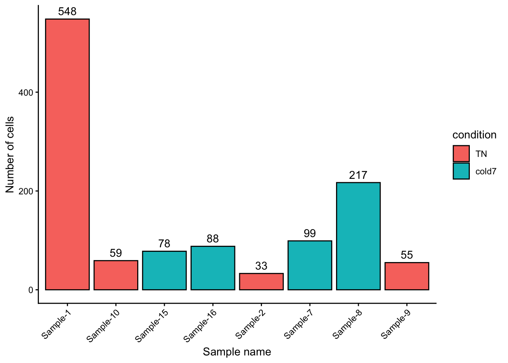
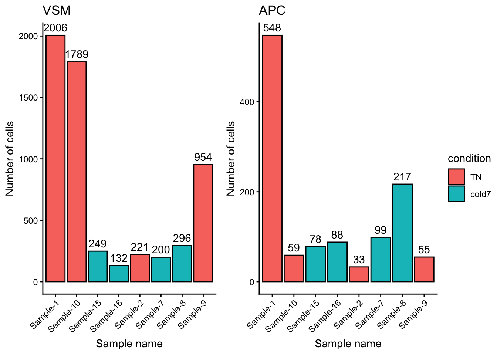

# Find unique celltypes
celltypes <- sort(unique(seurat@meta.data[["celltype"]]))Click here for code to plot the two bar plots side-by-side
Exercise 1
Another cell type in this dataset that was particularly interesting to the authors were the Pdgfr α+ adipose progentior cells (APCs).
- Subset the
bulkobject to isolate only adipose progenitor cells for the TN and cold7 conditions. Assign it to variable calledbulk_APC.
Hint: You may need to review celltypes to determine what this cell type is called in our data. You can find unique celltypes with the code:
Note
The abbreviations for the cell types can be found in the project set-up lesson.
celltypes[1] "Adipo" "AP" "EC" "ECAP" "Lymph" "Pericyte" "Schwann"
[8] "VSM" "VSM-AP" # Compare TN vs cold7 in APC cells
bulk_APC <- subset(bulk, subset = (celltype == "AP") & (condition %in% c("TN", "cold7")))- Plot the cell number distribution across samples. How do the numbers compare to VSM cells?
# Visualize number of cells per condition
ggplot(bulk_APC@meta.data, aes(x = sample, y = n_cells, fill = condition)) +
geom_bar(stat = "identity", color = "black") +
theme_classic() +
theme(axis.text.x = element_text(angle = 45, vjust = 1, hjust = 1)) +
labs(x = "Sample name", y = "Number of cells") +
geom_text(aes(label = n_cells), vjust = -0.5)
Note
Note that this R code below uses the ggpubr library. In order to run this you will need to first install the package and then run:
library(ggpubr)
# Plot VSM and APC side by side
plot_cell_number_vsm <- ggplot(bulk_vsm@meta.data, aes(x = sample, y = n_cells, fill = condition)) +
geom_bar(stat = "identity", color = "black") +
theme_classic() +
theme(axis.text.x = element_text(angle = 45, vjust = 1, hjust = 1)) +
labs(x = "Sample name", y = "Number of cells") +
geom_text(aes(label = n_cells), vjust = -0.5) +
ggtitle("VSM") +
theme(title = element_text(hjust = 0.5))
plot_cell_number_APC <- ggplot(bulk_APC@meta.data, aes(x = sample, y = n_cells, fill = condition)) +
geom_bar(stat = "identity", color = "black") +
theme_classic() +
theme(axis.text.x = element_text(angle = 45, vjust = 1, hjust = 1)) +
labs(x = "Sample name", y = "Number of cells") +
geom_text(aes(label = n_cells), vjust = -0.5) +
ggtitle("APC") +
theme(title = element_text(hjust = 0.5))
ggpubr::ggarrange(plot_cell_number_vsm, plot_cell_number_APC, nrow = 1,
common.legend = TRUE, legend = "right")
Overall we see far fewer cells, by an order of magnitude (scale goes to 2,000 for VSM but only 600 for APC). There is also a different distribution: the counts for Sample-10 and Sample-9 go down relative to other samples, while Sample-8 goes up.
Exercise 2
Create a DESeq2 object for the Pdgfr α+ APCs data as dds_APC.
# Get count matrix
APC_counts <- FetchData(bulk_APC, layer="counts", vars=rownames(bulk_APC))
# Create DESeq2 object
# transpose it to get genes as rows
dds_APC <- DESeqDataSetFromMatrix(t(APC_counts),
colData = bulk_APC@meta.data,
design = ~ condition)
dds_APCclass: DESeqDataSet
dim: 19771 8
metadata(1): version
assays(1): counts
rownames(19771): Xkr4 Gm1992 ... CAAA01118383.1 CAAA01147332.1
rowData names(0):
colnames(8): AP_Sample-1_TN AP_Sample-10_TN ... AP_Sample-8_cold7
AP_Sample-9_TN
colData names(5): orig.ident celltype sample condition n_cells